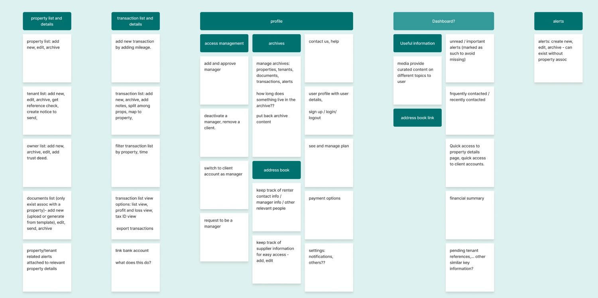
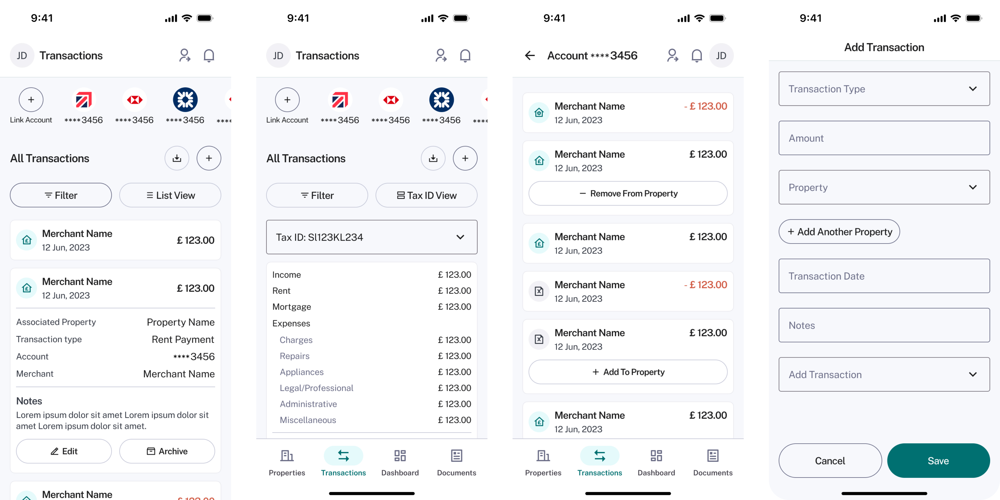
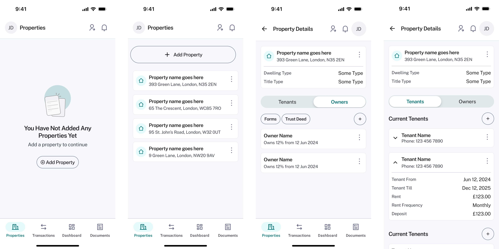
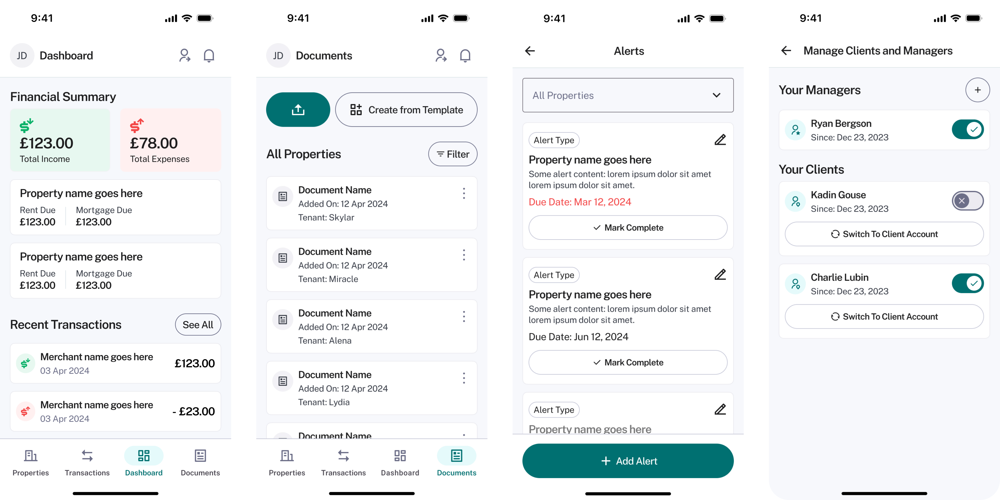

A Working Product. Looking for Clarity
I joined an early-stage founder with a junior designer to refine a property management platform that was already built and functional. The founder had completed market research, defined the feature set, and shipped an initial version — but the product needed a sharper UX and a more polished interface to be genuinely investor-ready.
The founder knew the market. They had clarity on what the product needed to do. What they didn't have was the design expertise to make those features feel effortless — or the bandwidth to structure the product so that two very different user types could navigate it without friction.
My role was straightforward: help make the product more intuitive, tighten the user experience, and collaborate with a UI designer to deliver a cohesive design in two weeks.
This wasn't a blank-slate engagement. It was a focused refinement sprint: understand what's built, clarify what's confusing, and redesign what matters most.
"What they needed was support in refining the user experience and interface design to make the product more intuitive and investor-ready."
Understanding What Was Already Built
We began with a discovery call to understand the product's current state, its functionality, and the founder's goals for the redesign. The session included a full walkthrough of the existing build, allowing us to identify usability gaps, clarify requirements, and align on priorities for the short engagement ahead.
Discovery Call
Walkthrough of the existing product, feature set, and business goals to align on scope and priorities.
Usability Audit
Identify gaps in the current interface, navigation, and flows — focusing on where users would get stuck or confused.
Requirements
Define what success looks like: investor-ready, intuitive, and structured for two distinct user types.
Landlords vs. Property Managers
Two distinct user groups emerged during discovery — and their needs were fundamentally different.
Manage their own properties and finances directly. They need full visibility into rent payments, maintenance schedules, tenant communication, and financial reporting — all in one place. Their relationship to the product is personal: it's their portfolio, their tenants, their income.
Oversee multiple landlords' portfolios simultaneously. They need to switch between different landlord accounts seamlessly, but with restricted access to sensitive financial information. Their relationship to the product is professional: it's a tool for managing clients, not their own assets.
What Made This Worth Building
I conducted a quick competitor review to analyze how other property management tools approached their user experience, feature sets, and workflows. The goal wasn't to copy what existed — it was to understand where the whitespace was, and where this product could genuinely differentiate.
Proactive Maintenance Alerts
Rather than waiting for things to break, the platform surfaces common property issues before they become urgent. This proactive approach helps users stay ahead of maintenance — saving time, money, and tenant frustration.
Dedicated Property Manager Views
Most tools treat property managers as glorified landlords. This platform recognized they're a distinct user type with specific needs: account switching, client management, and restricted financial access — all baked into the architecture from the start.
Structure First. Polish After.
With personas defined and competitive insights in hand, the real work began: reorganizing the product's content and features to make navigation simple, intuitive, and aligned with how each user type actually thinks about their work.
I redesigned the product's information architecture to group features logically and make it easy for users to locate what they needed. Next, I mapped user flows to clarify key interactions and surface edge cases — from onboarding to account switching to restricted access scenarios.

Parallel Design, Real Momentum.
With the structure and flows validated, I moved into wireframing the main sections and features. These wireframes weren't pixel-perfect — they were conversation starters. We reviewed them with the client regularly to refine details, validate decisions, and keep momentum high.
While I focused on experience and wireframes, my colleague worked in parallel on the UI design for approved sections. The client implemented designs progressively as we delivered them. This kept feedback loops short, allowed the team to see progress daily, and ensured we didn't build in a vacuum.




What We Delivered
By the end of the engagement, we delivered a cohesive, user-friendly product experience that aligned with both business and user goals. The founder felt confident presenting the new designs to investors — which was always the real success metric for this sprint.
Investor-Ready Designs
The redesigned product gave the founder confidence to pitch investors with a platform that looked professional, felt intuitive, and clearly demonstrated market differentiation.
Rapid Turnaround
Delivered a complete UX overhaul — from discovery to final designs — in just two weeks, proving that the right process and clear priorities can produce investor-quality work on a startup timeline.